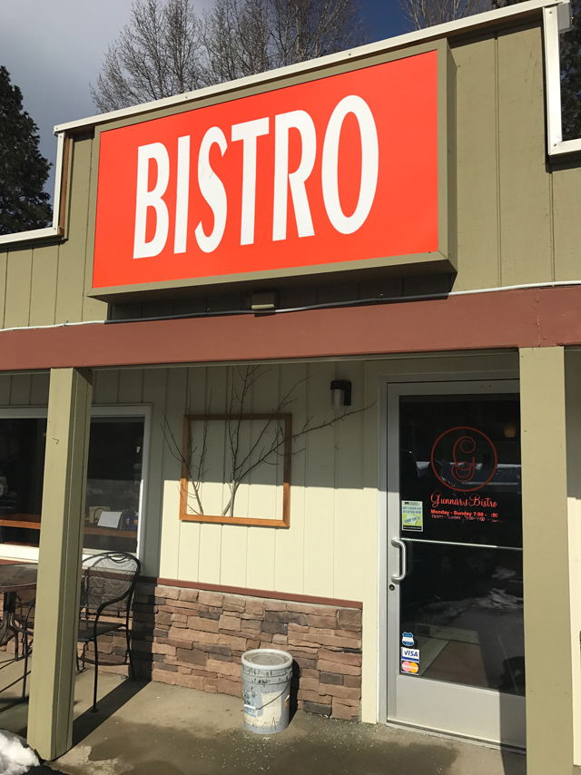
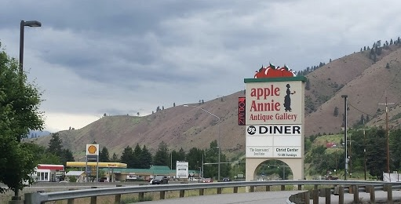
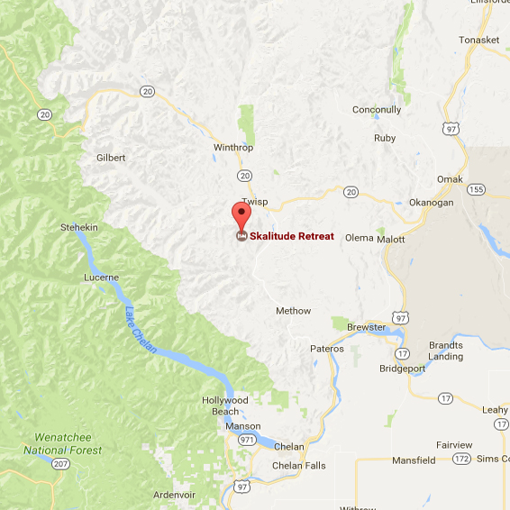

<div class="journey">
  <div class="journey-container">
    <div class="journey-fluff-container">
      <h2 class="journey-fluff">GRAB A BUDDY AND SOME CAR SNACKS, <br>GET COMFY AND ENJOY THE RIDE.</h2>
      <p id="journey-fluff-desc">There is no future in a front, Skalitude is a 4+ hour car ride from Seattle, including stops. There are multiple routes to get there though we recommend taking the 90 E route through the Snoqualmie Pass. It is a gorgeous drive that helps shed the weight of city life. Rambling through mountain passes, along the Colombia River and through the fruit orchards of Eastern Washington, the scenery provides a perfect backdrop for the journey.
        <br>
        <br>
        Below is a recommendation of a few places to stop along the way.</p>
    </div>

    <div class="journey-stops-container">
      <h2 class="journey-stops-heading">CLE ELUM</h2>
      <p class="journey-stops-direc">This is the first major turn off on the journey. Roughly after about 80 miles on the 90 E you will exit toward WA-970.</p>
      <div class="journey-stops-image-container">
        <div class="image-els">
          
          
        </div>
      </div>
      <p class="journey-stops-address"><a target="_blank" href="https://www.google.com/maps/place/Gunnars+Bistro/@47.188973,-120.9052397,17z/data=!4m13!1m7!3m6!1s0x549a1071555466bb:0x1b8260dfd716cbc2!2s811+WA-970+%236,+Cle+Elum,+WA+98922!3b1!8m2!3d47.188973!4d-120.903051!3m4!1s0x549a1071555466bb:0x40aa8712db157a74!8m2!3d47.188973!4d-120.903051" class="journey-stops-address-names">Gunnar’s Bistro</a>-811 WA-970 # 6 Cle Elum 98922</p>
      <p class="journey-stops-desc">Cute little café close to the exit on the right hand side of the street. they have coffee, tea, sandos, and a clean bathroom.</p>
    </div>

    <div class="journey-stops-container cash-wen">
      <h2 class="journey-stops-heading">CASHMERE/ WENATCHEE</h2>
      <p class="journey-stops-direc cash-wen-direc">These two are relatively close to one another located off Highway 2 and a great place to stop for trinkets, rations and/or bathrooms.</p>

      <div class="journey-stops-image-container">
        <div class="image-els">
          
        </div>
      </div>

      <p class="journey-stops-address cash-wen-add"><a target="-_blank" href="https://www.google.com/maps/place/100+Apple+Annie+Ave,+Cashmere,+WA+98815/data=!4m2!3m1!1s0x549bb5313ac15a97:0xac68af9cc4eb8a3f?sa=X&ved=0ahUKEwj6mq2m_czSAhXorFQKHUpVAp4Q8gEIGzAA" class="journey-stops-address-names">Apple Annie’s Antique Gallery</a><br>100 Apple Annie Ave Cashmere WA 98815</p>
      <p class="journey-stops-desc">Need to stretch your legs and snag a sweet trinket, this is

      the place. There is also a 50s diner and restrooms attached. Located on the left-hand side of Highway 2 in Cashmere next to the Shell gas station.
      <br> Wenatchee is the last big town before Skalitude and the perfect place to pick up any last minute provisions</p>
    </div>

    <div class="journey-stops-container ew">
      <h2 class="journey-stops-heading">EASTERN WASHINGTON</h2>
      <p class="journey-stops-direc cash-wen-direc">Once you pass Wenatchee you begin the tour of Washington’s agricultural area. There are dozens of orchards and fruit stands along the way and we encourage you to stop at any that tickle your fancy. <br> Once on WA-153, you are in the home stretch and cell service will begin to drop out. We recommend saving the directions off line and/or taking a screenshot, just in case. There is a small sign on the left-hand side of the intersection of WA-153 and Libby Creek Rd that says Skalitude Retreat. This is your turn off! Once you turn left on to Libby Creek Rd you will quickly hit primitive roads. Stay right and follow it all the way up, you will dead end into Skalitude and there will be signage for parking. Yay, you made it! <br>
      Unless you are highly ambitious or in a crunch (time our financial) we don’t recommend flying into Washington and driving to Skalitude on the same day, it can be a bit much.  Sam Turk, we’re talking to you! <br>Those in need of a carpool buddy, please send us an <a href="mailto:turkeyweddinggobbles@gmail.com">email</a>
      and we will be happy to hook you up with fellow travelers.</p>
    </div>

    <div class="map-contatiner">
      <div class="map-image-container">
        <a target="_blank" href="https://www.google.com/maps/place/Skalitude+Retreat/@48.2630837,-120.6326295,9z/data=!4m5!3m4!1s0x549ca06adc0ee773:0x9f5ef88bffbb488a!8m2!3d48.2918165!4d-120.1623049?hl=en">
          <div class="map-overlay"></div>
          
        </a>
        <div class="map-desc-container">
          <p class="map-add"><a target="_blank" href="https://www.google.com/maps/place/Skalitude+Retreat/@48.2630837,-120.6326295,9z/data=!4m5!3m4!1s0x549ca06adc0ee773:0x9f5ef88bffbb488a!8m2!3d48.2918165!4d-120.1623049?hl=en">302 Smith Canyon Road Carlton Wa 98814</a></p>
          <h2 id="map-desc">Come find us!</h2>
        </div>
      </div>
    </div>
  </div>
</div>
